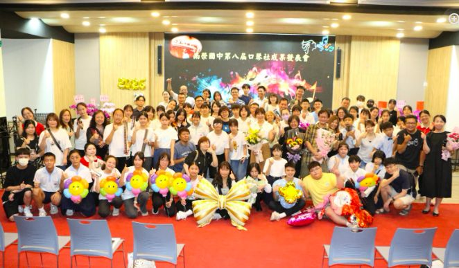
2026 · 06 · 12
Music音楽
8th Harmonica Graduation Concert
An evening of classical, folk and pop — solo, duet and ensemble — joined by an elementary club and alumni performers.
第8回 ハーモニカ卒業演奏会
クラシック・民謡・ポップスを独奏・重奏・合奏で。小学校のクラブや卒業生も共演しました。

From the Campus南榮のいま

2026 · 06 · 12
Music音楽
An evening of classical, folk and pop — solo, duet and ensemble — joined by an elementary club and alumni performers.
クラシック・民謡・ポップスを独奏・重奏・合奏で。小学校のクラブや卒業生も共演しました。
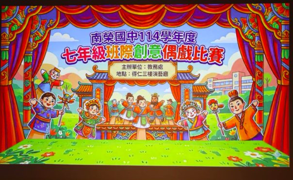
2026 · 06 · 11
Arts芸術
7th-grade classes wrote scripts, built puppets and performed. Class 711 advances to the national drama competition.
各クラスが脚本・人形・上演を手がけ、711組が全国学生演劇コンクールへ進出しました。
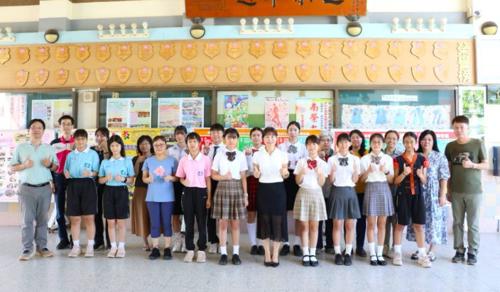
2026 · 06 · 08
Language語学
Six golds and three silvers — the most golds in the junior-high division. All nine winners advance to the county finals.
金6・銀3、中学部門で最多の金賞。9名全員が県大会へ進みます。
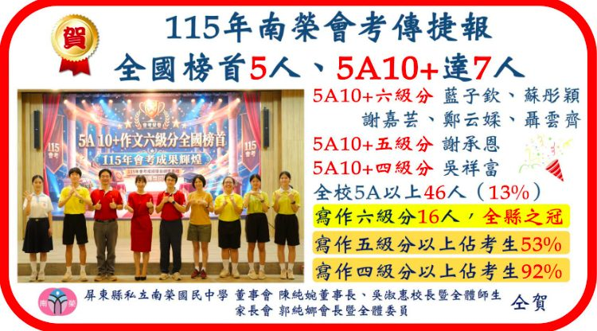
2026 · 06 · 05
Achievement学力
All five of Pingtung County's top scorers in the 2026 national junior-high exam came from Nan Jung — a tribute to its language and whole-person education.
2026年の国中教育会考で、屏東県の最高得点者5名はすべて南榮の生徒。語文・全人教育の成果です。
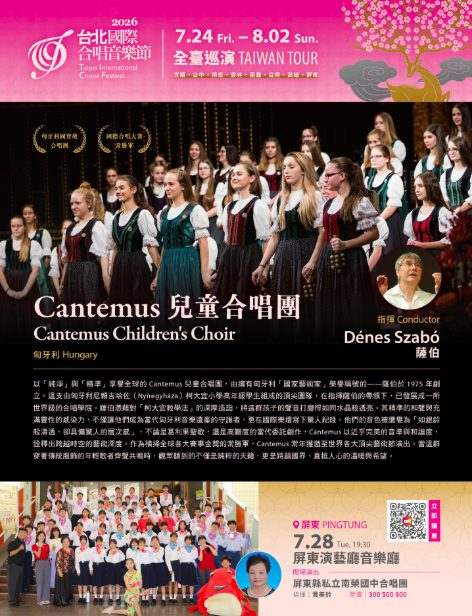
2026 · 06 · 05
International国際
The choir will perform at the Taipei International Choral Festival this July, alongside Hungary's renowned Cantemus Children's Choir.
合唱団は7月、台北国際合唱音楽祭で、著名なハンガリーのCantemus児童合唱団と共演します。
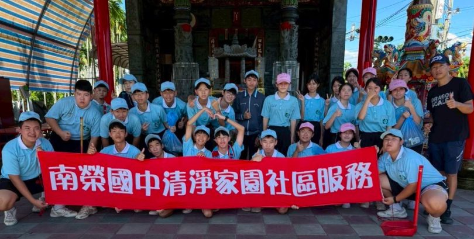
2026 · 05 · 29
Service奉仕
8th-graders cleaned the campus and nearby neighbourhood, putting good citizenship into practice.
8年生が校内と周辺地域を清掃し、良き市民としての心を実践しました。
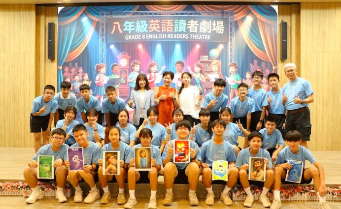
2026 · 05 · 28
English英語
For the first time, 8th-graders dubbed clips from animated films in English — voicing emotion, rhythm and character.
8年生が初めてアニメ映画の場面を英語でアフレコ。感情・リズム・役柄を声で表現しました。
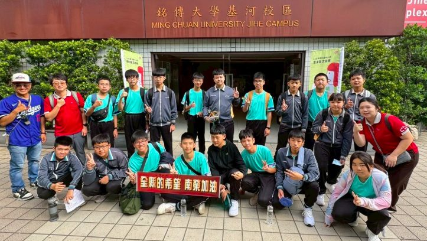
2026 · 05 · 25
Language語学
Two Nan Jung teams earned honours at the national Hakka arts conversation competition among 43 schools.
43校が競う全国客家芸文・会話コンクールで、南榮の2チームが入賞しました。
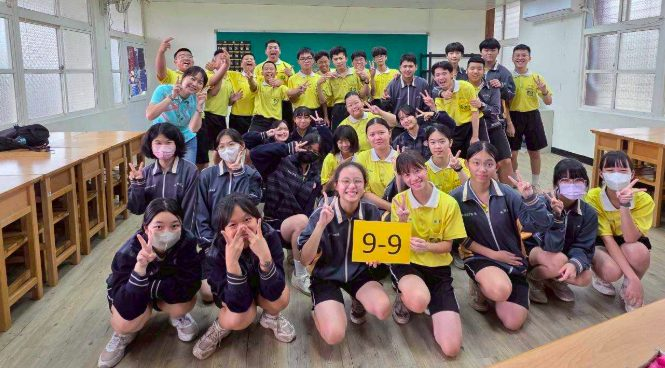
2026 · 05 · 18
Care寄り添い
Staff and teachers accompanied 9th-graders to the national exam with warm-up sessions, snacks and steady encouragement.
教職員が9年生に付き添い、ほぐし運動や軽食、温かな励ましで安心の受験環境を整えました。
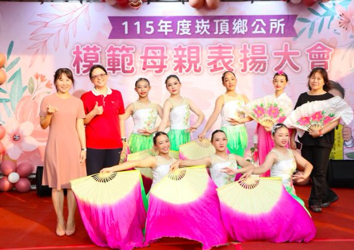
2026 · 05 · 11
Community地域
The dance troupe performed "Lotus in the Spring Breeze" and "Fluttering Butterflies" at Kanding's model-mother ceremony.
舞踊団が「清荷舞春風」「彩蝶翩翩」を、崁頂郷の模範母親表彰式で披露しました。
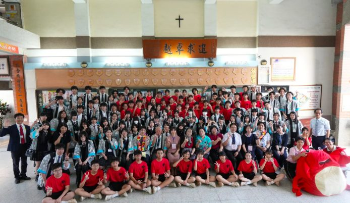
2026 · 04 · 27
International国際
Over 80 students from Sakura Kokusai High School were welcomed with drums and orchestra, then shared spring rolls, calligraphy, knotting and paper-cutting — celebrating 25 years of friendship.
さくら国際高等学校の80名余りを太鼓と国楽で歓迎し、春巻き・書道・中国結び・切り絵を共に体験。25年の友情を祝いました。
2026 · 04 · 20
Culture文化
Students made peanut-powder mochi and grass-jelly, learning Hakka food culture by hand and heart.
生徒たちが落花生粉の餅や仙草ゼリーを作り、客家の食文化を体験を通して学びました。
2026 · 04 · 17
Arts芸術
Three national grand prizes and six distinctions, including a marching-band suite arranged from Tchaikovsky's Nutcracker.
全国特優3・優等6。チャイコフスキー『くるみ割り人形』を編曲した管楽組曲も披露しました。
2026 · 04 · 17
English英語
The Studio Classroom team brought songs and games — You Raise Me Up, Lean on Me — making English joyful for all.
空中英語教室チームが歌とゲームで来校。〈You Raise Me Up〉〈Lean on Me〉で英語を楽しく届けました。
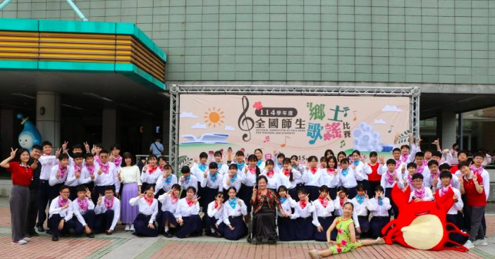
2026 · 04 · 10
Music音楽
Singing two Taiwanese folk songs at the national folk-song competition, the choir won "Excellence" for the seventh time.
台湾語の民謡2曲を披露し、全国郷土歌謡コンクールで7度目の特優を受賞しました。